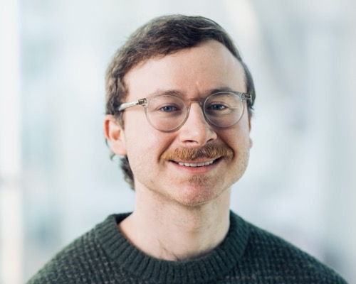

Mitchell Ostrow
PhD candidate, Computational Neuroscience & Machine Learning, MIT
ostrow (at) mit.edu
GitHub ·
Google Scholar ·
LinkedIn ·
X ·
Bluesky
I'm a PhD student at MIT working with Ila Fiete.
I'm interested in bridging systems neuroscience, cognitive science, and deep learning through the lens of dynamical systems theory.
To that end, I design and apply quantitative methods to understand the computations performed by both biological and artificial neural networks.
Before MIT, I studied statistics & data science and neuroscience at Yale, and I've worked in medicine (as an EMT), experimental neuroscience, and industry.
I'm grateful to have been supported at MIT by the Computationally-Enabled Integrative Neuroscience Fellowship and the Praecis Presidential Fellowship. I'm currently supported by the NSF GRFP.
I also work as a freelance editor, especially for college admission essays and graduate school statements of purpose.
Reach out if you're interested.
Selected papers
- A metric for comparing complex systems by their dynamics.
Ostrow, Eisen, Kozachkov, Redman, Fiete. In review, 2026.
[paper]
[code]
dynamical systems, Koopman operators, similarity metrics, neural data analysis
- InputDSA: Demixing, then comparing recurrent dynamics and external input.
Huang*, Ostrow*, Singh, Kozachkov, Rajan. ICLR, 2026 (top 2%). (*equal contribution)
[paper]
[code]
input-driven dynamics, system identification, RNNs
- Characterizing control between interacting subsystems with deep Jacobian estimation.
Eisen, Ostrow, Chandra, Kozachkov, Miller, Fiete. NeurIPS, 2025 (spotlight).
[paper]
[code]
interacting subsystems, control, Jacobian estimation
- Delay embedding theory of neural sequence models.
Ostrow, Eisen, Fiete. ICML Workshops on Next Generation Sequence Models & Mechanistic Interpretability, 2024.
[paper]
[code]
sequence models, transformers, state-space models, delay embeddings
- Beyond geometry: Comparing the temporal structure of computation in neural circuits with dynamical similarity analysis.
Ostrow, Eisen, Kozachkov, Fiete. NeurIPS, 2023.
[paper]
[code]
dynamical similarity, Koopman operators, RNNs, learning rules
Selected talks
- A metric for comparing complex systems by their dynamics
Contributed Talk, 7th International Conference on the Mathematics of Neuroscience and AI, 2026 (top 10%)
Flatiron Center Junior Theoretical Neuroscientist Workshop, July 2026
- Introduction to Koopman operator theory
[notes]
Flatiron Center Junior Theoretical Neuroscientist Workshop, July 2026
- InputDSA: Demixing, then comparing recurrent dynamics and external input
Contributed Talk, COSYNE 2026 (top 2%) [video]
- Beyond geometry: Comparing the temporal structure of computation in neural circuits with dynamical similarity analysis
Contributed Talk, COSYNE, March 2024 (top 2%) [video]
Contributed Talk, CCN, August 2023 (top 5%)
Papers
- A metric for comparing complex systems by their dynamics.
Ostrow, Eisen, Kozachkov, Redman, Fiete. In review, 2026.
[paper]
[code]
dynamical systems, Koopman operators, similarity metrics, neural data analysis
- The geometry of ignorance: How LLMs encode and adjust a Bayesian prior.
Liu, Arora, Bao, Ostrow, et al. In submission, ICLR, 2027.
LLMs, Bayesian priors, representations
- Traversing the solution space of neural networks with Hessian null-space continuation.
Huang, Ostrow, Lu, Redman, Kozachkov. In submission, ICLR, 2027.
loss landscapes, optimization
- InputDSA: Demixing, then comparing recurrent dynamics and external input.
Huang*, Ostrow*, Singh, Kozachkov, Rajan. ICLR, 2026 (top 2%). (*equal contribution)
[paper]
[code]
input-driven dynamics, system identification, RNNs
- Fast dynamical similarity analysis.
Behrad, Ostrow, Fahkarian, Fiete, Safavi. In review, Nature Communications, 2025.
[code]
dynamical similarity, scalability
- Characterizing control between interacting subsystems with deep Jacobian estimation.
Eisen, Ostrow, Chandra, Kozachkov, Miller, Fiete. NeurIPS, 2025 (spotlight).
[paper]
[code]
interacting subsystems, control, Jacobian estimation
- The McClelland lectures: Neural network models of human cognition.
Benjamin*, Beyer*, …, Ostrow*, …, Saxe, McClelland. PMLR, 2025.
[paper]
neural network models of cognition
- Computation-through-dynamics benchmark: Simulated datasets and quality metrics for dynamical models of neural activity.
Versteeg, McCart, Ostrow, Zoltowski, …, Pandarinath. PLoS Computational Biology, 2025.
[paper]
benchmarks, latent dynamics models, neural data
- How the brain creates cognitive maps of related concepts.
Ostrow, Fiete. Nature (News & Views), 2024.
[paper]
cognitive maps, hippocampus, commentary
- Delay embedding theory of neural sequence models.
Ostrow, Eisen, Fiete. ICML Workshops on Next Generation Sequence Models & Mechanistic Interpretability, 2024.
[paper]
[code]
sequence models, transformers, state-space models, delay embeddings
- How diffusion models learn to factorize and compose.
Liang, Liu, Ostrow, Fiete. NeurIPS, 2024.
[paper]
diffusion models, compositionality, generalization
- Does maximizing neural regression scores teach us about the brain?
Schaeffer, Khona, Chandra, Ostrow, Miranda, Koyejo. NeurIPS Workshops (NeurReps, UniReps), 2024.
[paper]
NeuroAI, model–brain comparison
- Beyond geometry: Comparing the temporal structure of computation in neural circuits with dynamical similarity analysis.
Ostrow, Eisen, Kozachkov, Fiete. NeurIPS, 2023.
[paper]
[code]
dynamical similarity, Koopman operators, RNNs, learning rules
- Associative memory under the probabilistic lens: Improved transformers and dynamic memory creation.
Schaeffer, Khona, Zahedi, Ostrow, Fiete, Gromov, Koyejo. NeurIPS Workshop on Associative Memory & Hopfield Networks, 2023.
transformers, Hopfield networks, memory
- Representational geometry of social inference and generalization in a competitive game.
Ostrow, Yang, Seo. RSS Workshop on Social Intelligence in Humans and Robots, 2022.
[paper]
[code]
[video]
theory of mind, deep RL, representational geometry
- Examining the viability of computational psychiatry: Approaches into the future.
Ostrow. Yale Undergraduate Research Journal, 2021.
[paper]
computational psychiatry, review
Talks
- A metric for comparing complex systems by their dynamics
Contributed Talk, 7th International Conference on the Mathematics of Neuroscience and AI, 2026 (top 10%)
Flatiron Center Junior Theoretical Neuroscientist Workshop, July 2026
Safavi Lab (TU Dresden), November 2026
- Introduction to Koopman operator theory
[notes]
Flatiron Center Junior Theoretical Neuroscientist Workshop, July 2026
- InputDSA: Demixing, then comparing recurrent dynamics and external input
Contributed Talk, COSYNE 2026 (top 2%) [video]
Safavi Lab (TU Dresden), 2026
- Comparing neural population dynamics by identifying optimal linearizing embeddings
Carney Institute, Brown University, September 2025
Olveczky Lab (Harvard), August 2025
- Building representations from the bottom up
Santa Fe Institute, September 2024
- Internship project presentation (ML methods for EMG decoding)
Meta Reality Labs, September 2024
- Beyond geometry: Comparing the temporal structure of computation in neural circuits with dynamical similarity analysis
Kriegeskorte Lab (Columbia), August 2024
Neuromatch Academy, Contributed Guest Tutorial, July 2024 [video]
Contributed Talk, COSYNE, March 2024 (top 2%) [video]
Workshop on Data-Driven and Task-Driven Models of Neural Computation, COSYNE, March 2024
Cognitive Science Lunch Talks, MIT BCS, October 2023
Contributed Talk, CCN, August 2023 (top 5%)
SFI Complexity-GAINS Workshop, August 2023
- Investigating the interplay of anatomical, biophysical, and functional modularity in task-optimized RNNs
International Brain Laboratory, February & June 2023
- Do deep neural networks have concepts? (with Chen, Zhang, Sung)
Philosophy of Deep Learning Conference, 2023
- How neuroscience and AI drive each other forwards
Instructor Spotlight, Inspirit AI Summer School, 2022
- Representational geometry of social inference and generalization in a competitive game
Spotlight Talk, RSS Workshop on Social Intelligence in Humans and Robots, June 2022 [video]
Yale Neuroscience Research in Progress, April 2022
- Deep meta-learning in a generalized context produces semantic neural representations
Yale Neuroscience Undergraduate Research Organization, February 2021
- Low-D sensory processing neural activity best explains mouse behavior in a visual discrimination task
Neuromatch Academy Virtual Conference, July 2020
Posters
- Traversing the solution space of neural networks with Hessian null-space continuation.
Huang, Ostrow, Lu, Redman, Kozachkov. New England Mechanistic Interpretability Conference, 2026 (selected as a talk, 8%).
- Fast dynamical similarity analysis.
Behrad, Ostrow, Fahkarian, Fiete, Safavi. CCN, 2026.
- InputDSA: Demixing, then comparing recurrent dynamics and external input.
Huang*, Ostrow*, Singh, Kozachkov, Rajan. COSYNE, 2026 (top 2%, talk selection) & RLDM & Kempner Institute Frontiers in NeuroAI Symposium, 2025. (*equal contribution)
- A metric for comparing complex systems by their dynamics.
Ostrow, Eisen, Redman, Kozachkov, Fiete. COSYNE & 7th International Conference on the Mathematics of Neuroscience and AI, 2026.
- Characterizing control between interacting subsystems with deep Jacobian estimation.
Eisen, Ostrow, Chandra, Kozachkov, Miller, Fiete. COSYNE, 2026.
- Beyond geometry: Comparing the temporal structure of computation in neural circuits with dynamical similarity analysis.
Ostrow, Eisen, Kozachkov, Fiete. CCN, 2023 (top 5%, talk selection) & COSYNE, 2024 (top 2%, talk selection).
- Predictive models are not enough for explanation-seeking curiosity: A case study.
Sung, Ostrow. Curiosity, Creativity and Complexity Conference, 2023.
- Network dimensions alter reversal learning strategies.
Naim, Gibson, Papageorgiou, Xie, Ostrow, Graybiel, Yang. COSYNE, 2023.
- Neural representations of opponent strategy support the adaptive behavior of recurrent actor-critics in a competitive game.
Ostrow, Yang, Seo. COSYNE, 2022.
- A deep neural network model adapts flexibly to different opponent strategies in a competitive game.
Ostrow, Yang, Seo. Society for Neuroscience, 2021.
- Exploring mouse models for tic pathophysiology with relevance to Tourette syndrome.
Ostrow, Emmons, Pittenger. Yale Undergraduate Research Symposium, 2019.
Service & mentoring
- Reviewer: ICML (2026), NeurIPS (2025, 2026), NeurReps (2022, 2026), CCN (2023), PNAS (2024), Cerebral Cortex (2024)
- Student Representative, MIT BCS Faculty Search, 2024
- Organizer, Santa Fe Institute Working Group on Compositionality, 2024
- Graduate Member, MIT Resources for Easing Friction and Stress (REFS), 2023–present
- Mentor, MIT BCS Application Assistance Program, 2022–2023
- Teaching assistant:
- MIT 9.53: Emergent Computations from Distributed Neural Circuits (Spring 2025)
- CCN Mechanistic Interpretability Tutorial (2024)
- MIT 9.49: Neural Circuits for Cognition (Fall 2023)
- Yale S&DS 312: Linear Models (Fall 2020)
Fellowships & awards
- STIRR Initiative Travel Award, 2026
- MIT McGovern Institute SPOT Award for Service to the Department, 2025
- Irene T. Cheng Fellowship, MIT, 2024
- NSF Graduate Research Fellowship (GRFP), 2024
- MIT McGovern Institute Science and Technology Award, 2024
- Singleton Fellowship, MIT, 2023
- NeurIPS Scholar Award, 2023
- UCL Analytical Connectionism Travel Grant, 2023
- Best Project, SFI Complexity-GAINS Program, 2023
- SFI Complexity-GAINS Travel Grant, 2023
- Praecis Presidential Fellowship, MIT, 2022
- Computationally-Enabled Integrative Neuroscience Fellowship, MIT, 2022
- Yale Nominee for the Marshall and Mitchell Scholarships, 2021
- Mellon Fellowship, Yale, 2021
- Kavli Neuroscience Fellowship, Yale, 2019
- Richter Fellowship, Yale, 2019
- 2nd Place Poster, Yale Undergraduate Research Symposium, 2019